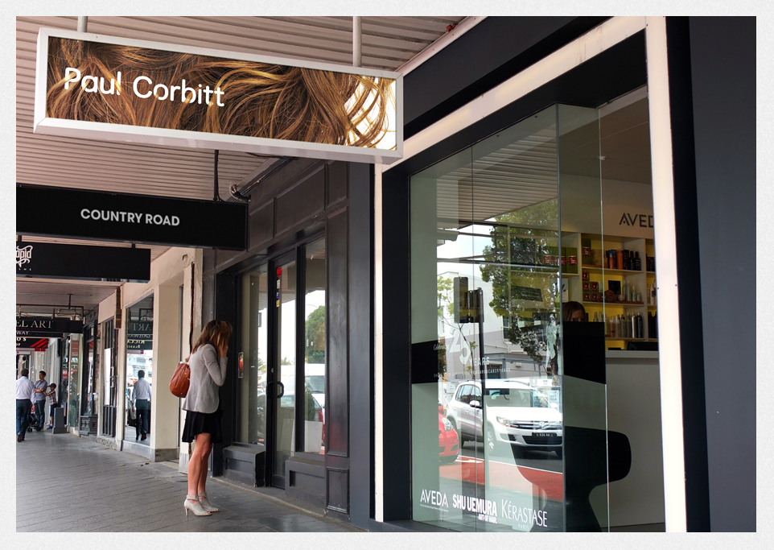
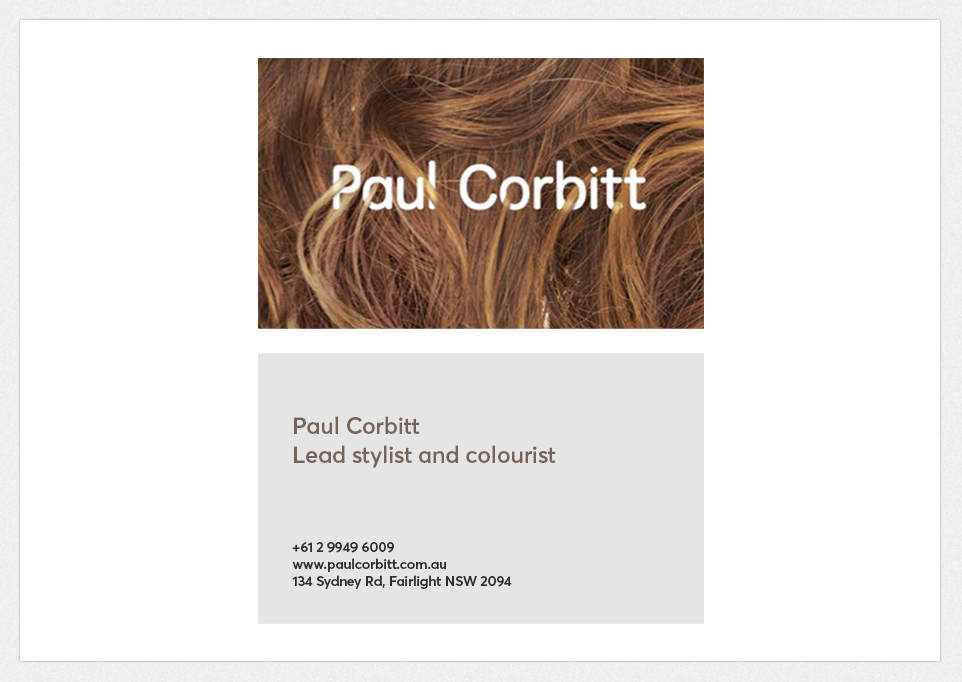
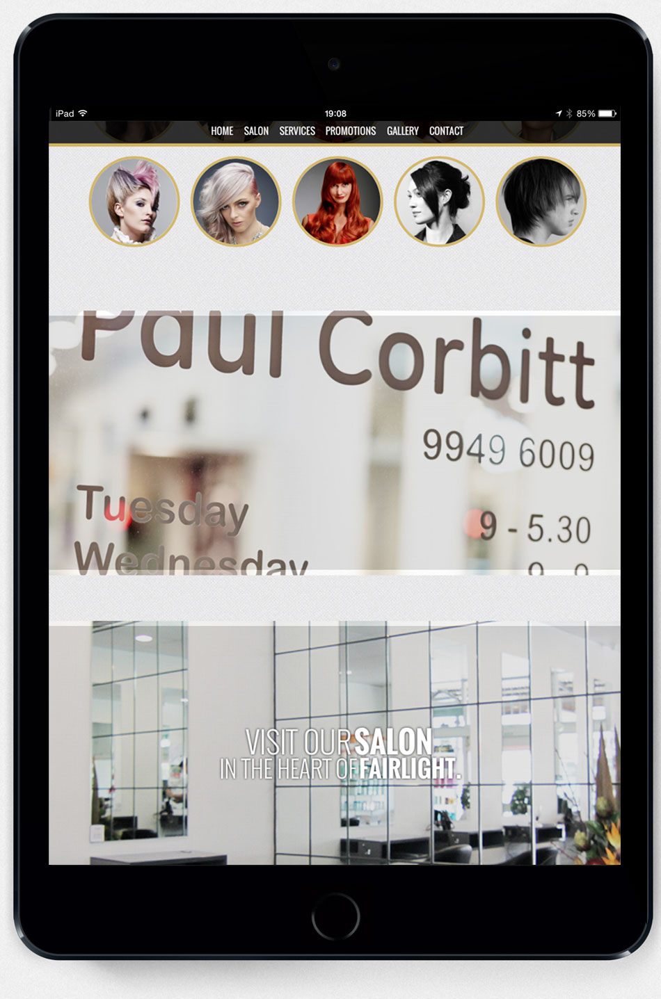
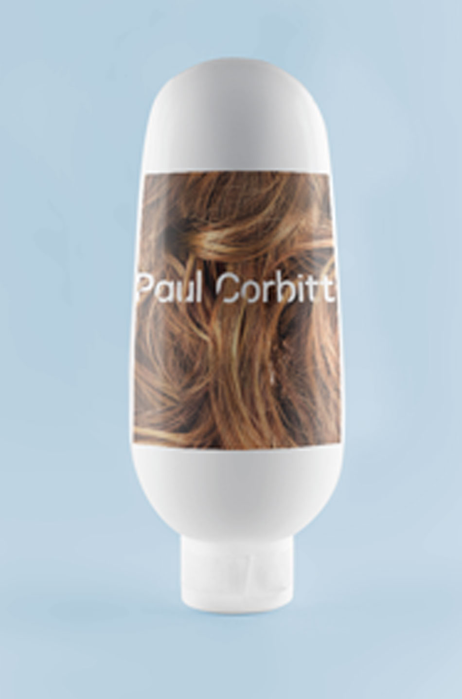

Based in Sydney, Paul Corbitt launched his self-titled hair salon in 2008.
Create a fresh and distinct brand identity, with adaptable scope for future business development and advertising.
Preempting the imminent launch of his first salon, Paul wanted to retain his client base and discreetly soft-launch his new venture. Capitalising on his award-wining career at Tony & Guy, I carefully selected an image that reflected his success, with a hint of glamour and femininity - literally flowing through his name. The ‘locks of hair’ worked as an obvious nod to hairdressing, eliminating the need to state the obvious, and allow his name to become the brand.
The format allowed for multiple, unknown future applications, and Paul continues to use the original hero piece across all promotional materials.